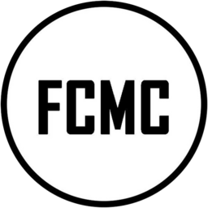

Подборка выпусков с моим участием: оформление DVD и буклетов для серии фольклорных изданий, выпущенных Научным центром народной музыки имени К. В. Квитки Московской государственной консерватории имени П. И. Чайковского — дизайн обложек, упаковки (боксов), художественное оформление буклетов, прорисовка карт-схем обследованных населенных пунктов. Также были воссозданы векторные копии обложек песенных сборников, вышедших в 1950-1990-х годах
Работы расположены в хронологическом порядке - можно проследить, как вырабатывался уникальный стиль дисков и обложек буклетов.
Ниже размещены образцы оформления накатов дисков, обложек боксов и обложки буклетов к мультимедиаизданиям. Нажмите на карточку, чтобы посмотреть работу крупнее, а также увидеть другие материалы этого выпуска.